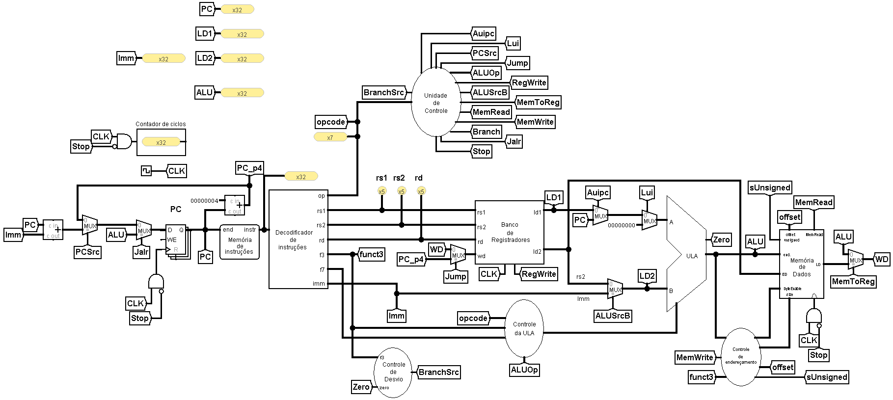
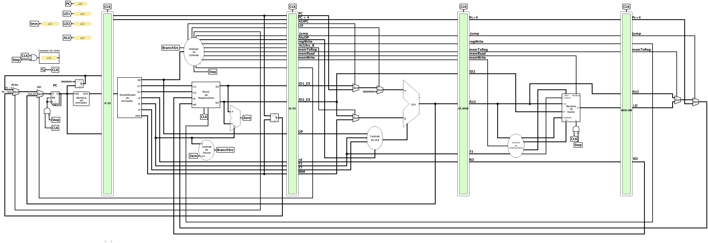

Processador RISC-V Interativo para Simulação e Modelagem de Arquitetura
O projeto PRISMA traz implementações de um processador RISC-V RV32I que usam o Logisim Evolution como base.
Derivações de modelo do mesmo conjunto de instruções.

Uma instrução executada por ciclo de clock.

Cinco estágios, separados por bancos de registradores.
Cada bloco é um circuito independente, com manual próprio, importado como biblioteca pelos processadores.
Arquivos em linguagem de máquina, prontos para carregar na memória
de instruções. Os do grupo pipeline já trazem as bolhas (nop) necessárias
e também rodam no monociclo.
Quatro atividades práticas de laboratório, cada uma com plano de aula e guia do aluno.